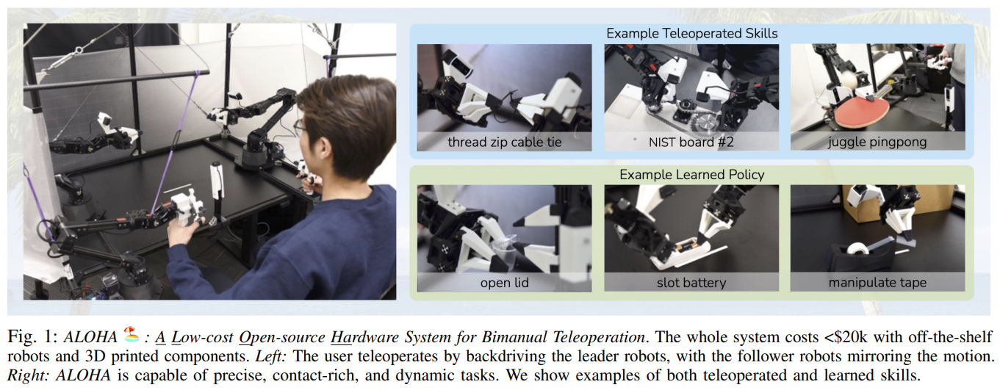
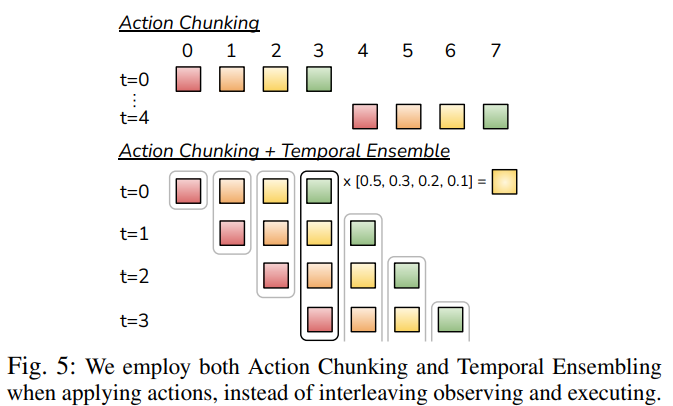
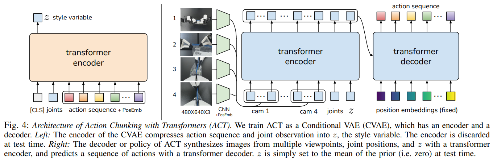
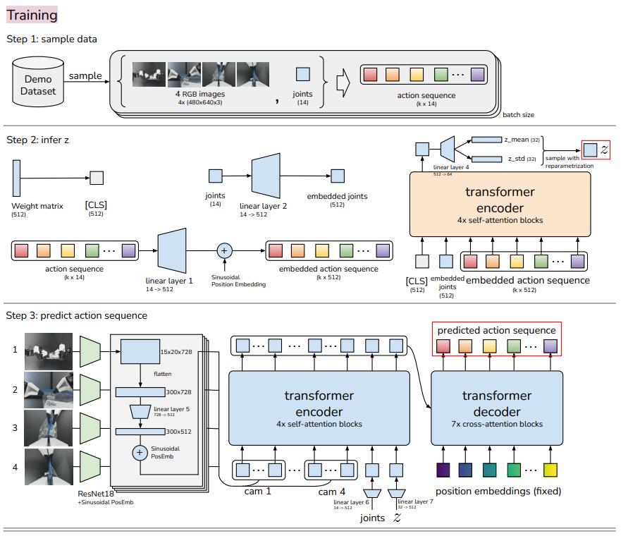
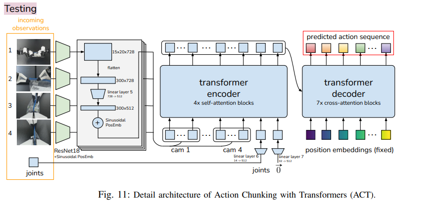
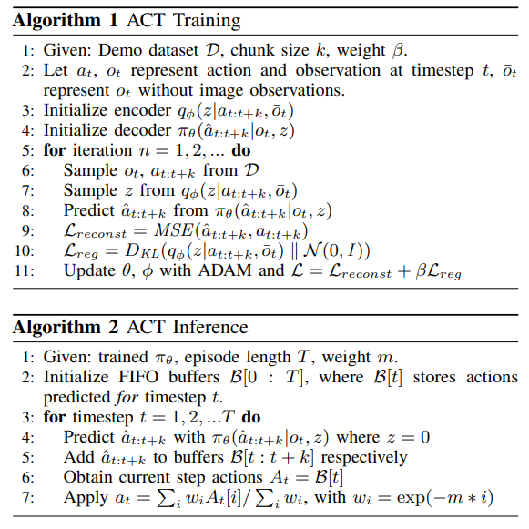
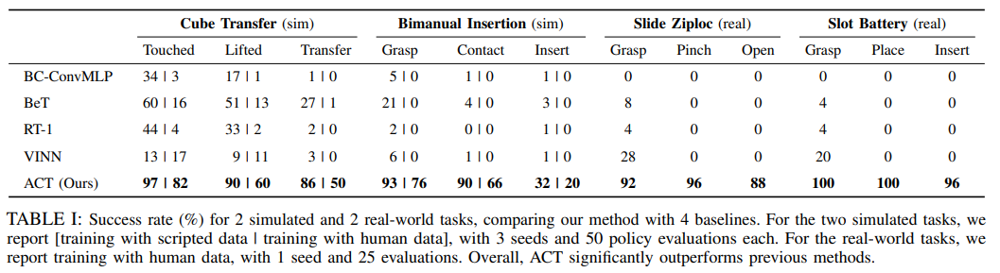
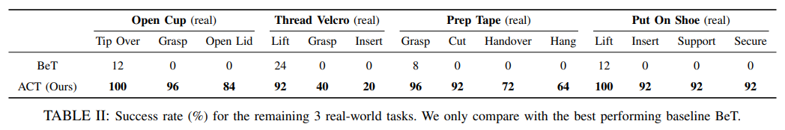
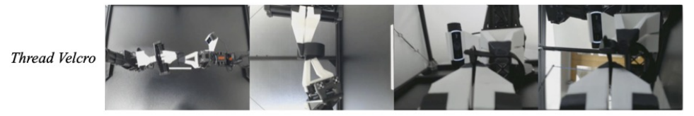
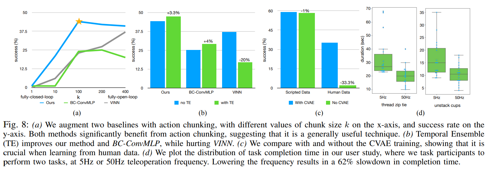

VLA_7. ACT: Learning Fine-Grained Bimanual Manipulation with Low-Cost Hardware
Introduction
Existing models use high-end sensors for precise estimation. Our goal is to develop a low-cost and imprecise hardware to perform fine manipulation tasks. Since the performance depends on the training data, so we build ALOHA, which is dexterous teleoperation system for data collection.

We show two main ideas:
- Teleoperation system: ALOHA
- Imitation learning algorithm: ACT
Action chunking is a concept that the policy predicts the next k target joint positions. This reduces the effective horizon, which is the number of decision-making, and compounding errors.
To make the policy more smooth, we use temporal ensembling, which averages overlapping action chunks predicted at different time steps.
Action chunking with transformers
Action chunking and temporal ensemble

Temporal ensemble performs a weighted average using exponential weight , where is the weight of the oldest action. For large , it weights older data more and for small , recent predictions receive more weight, so that the model can incorporate new observations quickly.
Modeling human data
To tackle challenge of training noisy human demonstration, we train the policy by conditional variational autoencoder(CVAE), which is conditioned on current observations.

Implementation



Experiments

Prior methods have poor performance since they cannot treat the compounding errors and non-Markovian behaviors. Especially, with a single-action prediction, it is difficult for the robot to determine when to pause and when to move based solely on its current state.

We observe low performance at Thread Velcro task. We hypothesize this is due to low contrast between background and small fraction of cable ties in the images. So it is hard to determine the exact position of the cable ties from image observations.

Ablations

(a): Action chunking
From (a), we disable temporal ensembling to measure only effect of action chunking. From k=1 to k=100, ACT performance improves. Predicting too many chunkings has the difficulty in modeling long action sequences and lack of receive behaviors.
Other model with action chunking improves, so we can see that action chunking is generally beneficial.
(b): Temporal ensembling
We hypothesize that the temporal ensembling benefits parametric methods by sampling smoothly, but the VINN is a non-parametric model, so it doesn’t suffer from this problem.
(c): CVAE
Since the scriped data is deterministic, there is no difference in the CVAE objective.
However, probabilistic action prediction using a CVAE is beneficial for learning from non-deterministic human demonstrations.
Note that The Latent That Never Was: A Forensic Re-run of the CVAE Ablation in Action Chunking Transformers reported improved performance after removing the CVAE encoder, these findings are limited to specific simulation settings and require further validation.
(d): High-frequency
50Hz performs highly dexterous and precise tasks in a short time, but 5Hz results in a 62% increase in teleoperation time.